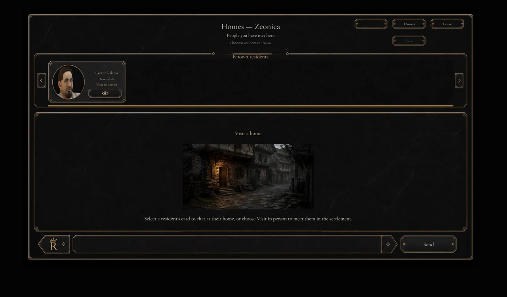
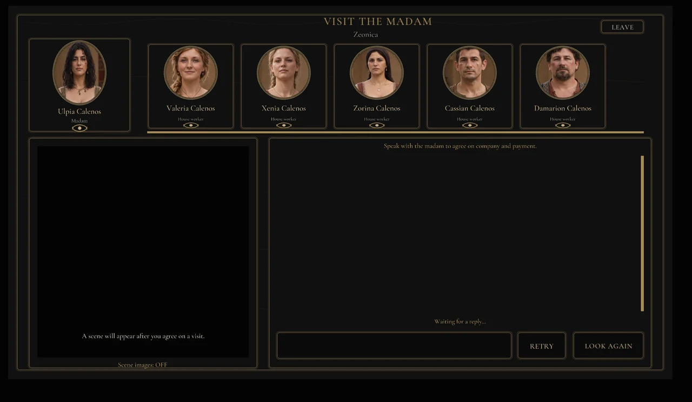

Town life, residents, and tavern visits
Meet persistent residents, visit homes, and understand tavern conversations.
People you meet can become persistent
Preview included#Beginning an explicit Reign conversation with an eligible peaceful adult civilian, guard, or soldier can make that exact person a persistent character. Their encountered appearance and original work matter. Ordinary native shopping or asking directions does not need to turn every passerby into a new biography.
The same person can be recognized later instead of being replaced with a generic extra. Their hometown and earlier life remain relevant after recruitment. A narrative family is not automatically a set of native Hero relatives; ask naturally rather than assuming empty native family links mean they have no household.
Visit the homes
Preview included#Use Visit the homes in a town, castle, or village. The directory lists known residents who belong there and are currently available. Select a resident to enter the private home conversation. Directory neighbors are not automatically listeners.
Visit in person takes you to the actual resident's scene and conversation, where available. It complements the private chat shortcut. If someone has left, changed duty, or joined you, recheck where they actually are rather than assuming their old card guarantees presence.
To recruit a resident, ask for voluntary agreement and review any price, companion capacity, and duty-release conditions. A soldier leaving service needs lawful release and real manpower accounting. Permanent recruitment is different from inviting a temporary visitor.

Visit the Madam
Preview included#In a town's tavern submenu, Visit the Madam opens a staffed venue with a madam, worker cards, conversation, and optional scenes. Adults have persistent identities; they are not newly invented for each visit.
Discuss the people and payment with the madam, then review the exact participant and price confirmation. Only the confirmed participants join the private visit. Choosing a card or discussing a price is not payment. Campaign time stays paused until you leave the visit.
To propose the exact terms yourself, press Alt+A and choose I wish to arrange a private visit…. Read the selected names and total before accepting the payment prompt. If the available roster changes while you negotiate, reopen the current offer before trying again.
Enter sends a ready contribution in this venue; Escape closes a portrait preview first or leaves the venue. Alt+A opens supported actions when the current conversation is ready.
The scene-image switch is separate from portrait generation. Arrival and Look Again images illustrate the confirmed cast. Missing AI portraits can use native presentation; they are not permission for an automatic bulk image purchase.
Repeated confirmed visits can produce Whoremonger gossip and a lasting reputation, with particular consequences for a spouse. A quiet period can let an active rumor subside; an established reputation is harder to lose. Staff can be recruited only through voluntary, supported agreement, and the venue replaces departed or retired workers with distinct people.

Clothing, drinking, and firm refusals
Preview included#Characters can change outfits through a supported conversation request. A preview lets you compare the old and proposed appearance before keeping or reverting a change. Equipment, ownership, and eligible clothing still matter. Mounts and horse equipment are not wearable clothing props.
Narrated drinking can build a persistent level of intoxication through an actual shared activity. A mention of a drink is different from a completed drink. Intoxication can affect how someone speaks and later recovers; it should not reset simply because you close the chat.
NPCs can maintain firm refusals and negotiate for their own reasons. A prior gift does not purchase universal consent. A serious new reason or different terms can be relevant, but endless repetition is not a guaranteed way around a refusal.